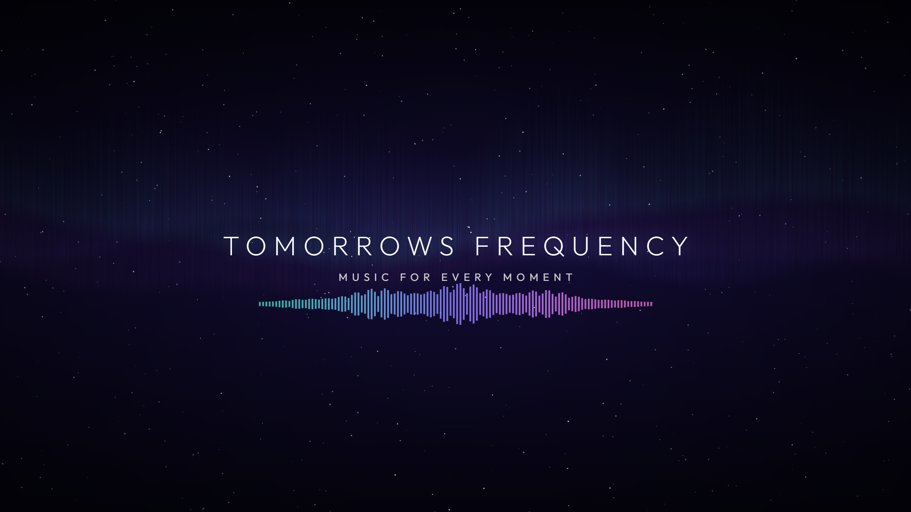

Music for every moment
Tomorrows Frequency is a YouTube music channel. New tracks every few days, across every genre: chillstep, house, garage, drum & bass, lo-fi, synthwave, ambient, dubstep, cinematic and more. Each track comes with its own living visual that moves with the music.
Free music for creators
Need stream-safe background music? Use any of our tracks in your videos, streams and podcasts for free, monetised ones included. Just credit the channel. See how.
How the channel is made
The music is created with AI music tools and hand-picked by a person. Every track is chosen, named and paired with an audio-reactive visual before it is published, and every video is labelled as AI-generated content on YouTube.
Channel Uploader
Channel Uploader is the channel's own publishing tool. It is a private script that the channel owner runs on their own computer to upload finished videos to the Tomorrows Frequency YouTube channel, set titles, descriptions and tags, and add videos to the channel's playlists, using the YouTube Data API. It is not offered to the public and does not access anyone else's account or data. See the privacy policy for details.